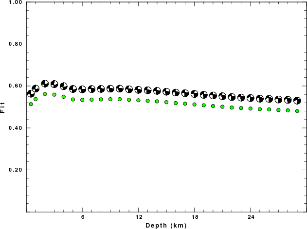

2013/05/22 17:19:39 35.299 -92.715 5.5 3.5 Arkansas
USGS Felt map for this earthquake
USGS/SLU Moment Tensor Solution
ENS 2013/05/22 17:19:39:0 35.30 -92.71 5.5 3.5 Arkansas
Stations used:
AG.FCAR IU.CCM NM.MGMO NM.PBMO NM.PENM NM.UALR TA.TUL1
TA.U40A TA.W39A TA.W41B TA.X40A
Filtering commands used:
hp c 0.03 n 3
lp c 0.10 n 3
Best Fitting Double Couple
Mo = 1.48e+21 dyne-cm
Mw = 3.38
Z = 2 km
Plane Strike Dip Rake
NP1 182 71 -159
NP2 85 70 -20
Principal Axes:
Axis Value Plunge Azimuth
T 1.48e+21 1 313
N 0.00e+00 62 222
P -1.48e+21 28 44
Moment Tensor: (dyne-cm)
Component Value
Mxx 9.59e+19
Mxy -1.31e+21
Mxz -4.27e+20
Myy 2.29e+20
Myz -4.40e+20
Mzz -3.25e+20
#######-------
##########------------
###########----------------
T ##########------------------
# ##########------------ -----
##############------------- P ------
###############------------- -------
################------------------------
################------------------------
################--------------------------
################-------------------------#
################----------------------####
--##############-----------------#########
-------########---------################
---------------#########################
---------------#######################
--------------######################
-------------#####################
-----------###################
-----------#################
---------#############
-----#########
Global CMT Convention Moment Tensor:
R T P
-3.25e+20 -4.27e+20 4.40e+20
-4.27e+20 9.59e+19 1.31e+21
4.40e+20 1.31e+21 2.29e+20
Details of the solution is found at
http://www.eas.slu.edu/Earthquake_Center/MECH.NA/20130522171939/index.html
|
STK = 85
DIP = 70
RAKE = -20
MW = 3.38
HS = 2.0
The waveform inversion is preferred.
The following compares this source inversion to others
USGS/SLU Moment Tensor Solution
ENS 2013/05/22 17:19:39:0 35.30 -92.71 5.5 3.5 Arkansas
Stations used:
AG.FCAR IU.CCM NM.MGMO NM.PBMO NM.PENM NM.UALR TA.TUL1
TA.U40A TA.W39A TA.W41B TA.X40A
Filtering commands used:
hp c 0.03 n 3
lp c 0.10 n 3
Best Fitting Double Couple
Mo = 1.48e+21 dyne-cm
Mw = 3.38
Z = 2 km
Plane Strike Dip Rake
NP1 182 71 -159
NP2 85 70 -20
Principal Axes:
Axis Value Plunge Azimuth
T 1.48e+21 1 313
N 0.00e+00 62 222
P -1.48e+21 28 44
Moment Tensor: (dyne-cm)
Component Value
Mxx 9.59e+19
Mxy -1.31e+21
Mxz -4.27e+20
Myy 2.29e+20
Myz -4.40e+20
Mzz -3.25e+20
#######-------
##########------------
###########----------------
T ##########------------------
# ##########------------ -----
##############------------- P ------
###############------------- -------
################------------------------
################------------------------
################--------------------------
################-------------------------#
################----------------------####
--##############-----------------#########
-------########---------################
---------------#########################
---------------#######################
--------------######################
-------------#####################
-----------###################
-----------#################
---------#############
-----#########
Global CMT Convention Moment Tensor:
R T P
-3.25e+20 -4.27e+20 4.40e+20
-4.27e+20 9.59e+19 1.31e+21
4.40e+20 1.31e+21 2.29e+20
Details of the solution is found at
http://www.eas.slu.edu/Earthquake_Center/MECH.NA/20130522171939/index.html
|
The focal mechanism was determined using broadband seismic waveforms. The location of the event and the and stations used for the waveform inversion are shown in the next figure.
|
|
The program wvfgrd96 was used with good traces observed at short distance to determine the focal mechanism, depth and seismic moment. This technique requires a high quality signal and well determined velocity model for the Green functions. To the extent that these are the quality data, this type of mechanism should be preferred over the radiation pattern technique which requires the separate step of defining the pressure and tension quadrants and the correct strike.
The observed and predicted traces are filtered using the following gsac commands:
hp c 0.03 n 3 lp c 0.10 n 3The results of this grid search from 0.5 to 19 km depth are as follow:
DEPTH STK DIP RAKE MW FIT
WVFGRD96 0.5 90 75 -5 3.30 0.5134
WVFGRD96 1.0 90 75 -10 3.33 0.5374
WVFGRD96 2.0 85 70 -20 3.38 0.5615
WVFGRD96 3.0 90 70 -15 3.40 0.5588
WVFGRD96 4.0 90 70 -15 3.41 0.5489
WVFGRD96 5.0 90 70 -15 3.41 0.5357
WVFGRD96 6.0 270 85 25 3.43 0.5339
WVFGRD96 7.0 270 70 10 3.43 0.5351
WVFGRD96 8.0 275 80 25 3.45 0.5361
WVFGRD96 9.0 275 80 25 3.46 0.5369
WVFGRD96 10.0 275 80 25 3.47 0.5372
WVFGRD96 11.0 275 80 25 3.48 0.5343
WVFGRD96 12.0 275 80 25 3.49 0.5317
WVFGRD96 13.0 275 80 25 3.50 0.5296
WVFGRD96 14.0 275 80 25 3.51 0.5268
WVFGRD96 15.0 275 80 25 3.52 0.5227
WVFGRD96 16.0 270 70 10 3.51 0.5184
WVFGRD96 17.0 270 70 10 3.52 0.5155
WVFGRD96 18.0 270 70 10 3.52 0.5121
WVFGRD96 19.0 270 70 10 3.53 0.5079
WVFGRD96 20.0 270 65 10 3.55 0.5046
WVFGRD96 21.0 275 60 15 3.57 0.5012
WVFGRD96 22.0 275 60 15 3.57 0.4973
WVFGRD96 23.0 270 60 10 3.57 0.4948
WVFGRD96 24.0 270 60 5 3.58 0.4926
WVFGRD96 25.0 270 60 10 3.59 0.4895
WVFGRD96 26.0 270 55 10 3.60 0.4883
WVFGRD96 27.0 270 55 10 3.61 0.4855
WVFGRD96 28.0 270 55 10 3.61 0.4839
WVFGRD96 29.0 260 65 -20 3.59 0.4804
The best solution is
WVFGRD96 2.0 85 70 -20 3.38 0.5615
The mechanism correspond to the best fit is
|
|
The best fit as a function of depth is given in the following figure:
|  |
|
|
The comparison of the observed and predicted waveforms is given in the next figure. The red traces are the observed and the blue are the predicted. Each observed-predicted component is plotted to the same scale and peak amplitudes are indicated by the numbers to the left of each trace. A pair of numbers is given in black at the right of each predicted traces. The upper number it the time shift required for maximum correlation between the observed and predicted traces. This time shift is required because the synthetics are not computed at exactly the same distance as the observed and because the velocity model used in the predictions may not be perfect. A positive time shift indicates that the prediction is too fast and should be delayed to match the observed trace (shift to the right in this figure). A negative value indicates that the prediction is too slow. The lower number gives the percentage of variance reduction to characterize the individual goodness of fit (100% indicates a perfect fit).
The bandpass filter used in the processing and for the display was
hp c 0.03 n 3 lp c 0.10 n 3
The plots below start 30 seconds before the theoretical S arrival and continue until 60 seconds after the theoretical S arrival.
|
|
| Focal mechanism sensitivity at the preferred depth. The red color indicates a very good fit to thewavefroms. Each solution is plotted as a vector at a given value of strike and dip with the angle of the vector representing the rake angle, measured, with respect to the upward vertical (N) in the figure. |
A check on the assumed source location is possible by looking at the time shifts between the observed and predicted traces. The time shifts for waveform matching arise for several reasons:
Time_shift = A + B cos Azimuth + C Sin Azimuth
The time shifts for this inversion lead to the next figure:
The derived shift in origin time and epicentral coordinates are given at the bottom of the figure.
Thanks also to the many seismic network operators whose dedication make this effort possible: University of Alaska, University of Washington, Oregon State University, University of Utah, Montana Bureas of Mines, UC Berkely, Caltech, UC San Diego, Saint Louis University, University of Memphis, Lamont Doherty Earth Observatory, the IRIS stations and the Transportable Array of EarthScope.
The WUS used for the waveform synthetic seismograms and for the surface wave eigenfunctions and dispersion is as follows:
MODEL.01
Model after 8 iterations
ISOTROPIC
KGS
FLAT EARTH
1-D
CONSTANT VELOCITY
LINE08
LINE09
LINE10
LINE11
H(KM) VP(KM/S) VS(KM/S) RHO(GM/CC) QP QS ETAP ETAS FREFP FREFS
1.9000 3.4065 2.0089 2.2150 0.302E-02 0.679E-02 0.00 0.00 1.00 1.00
6.1000 5.5445 3.2953 2.6089 0.349E-02 0.784E-02 0.00 0.00 1.00 1.00
13.0000 6.2708 3.7396 2.7812 0.212E-02 0.476E-02 0.00 0.00 1.00 1.00
19.0000 6.4075 3.7680 2.8223 0.111E-02 0.249E-02 0.00 0.00 1.00 1.00
0.0000 7.9000 4.6200 3.2760 0.164E-10 0.370E-10 0.00 0.00 1.00 1.00
Here we tabulate the reasons for not using certain digital data sets
The following stations did not have a valid response files:
DATE=Wed May 22 15:53:05 CDT 2013